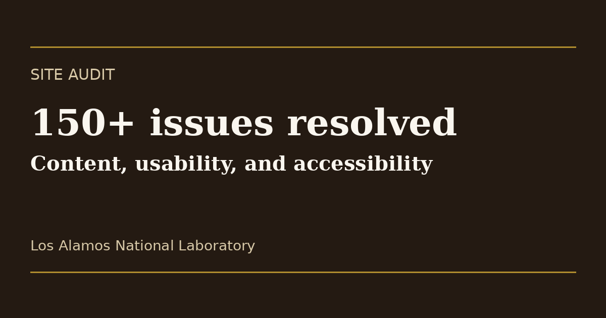
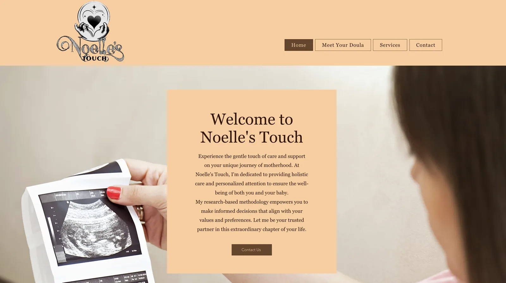
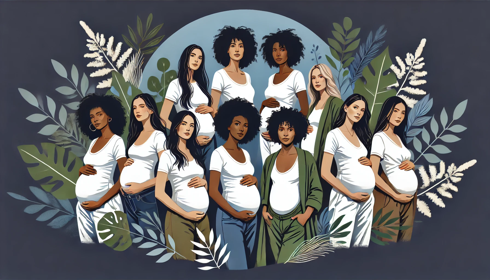
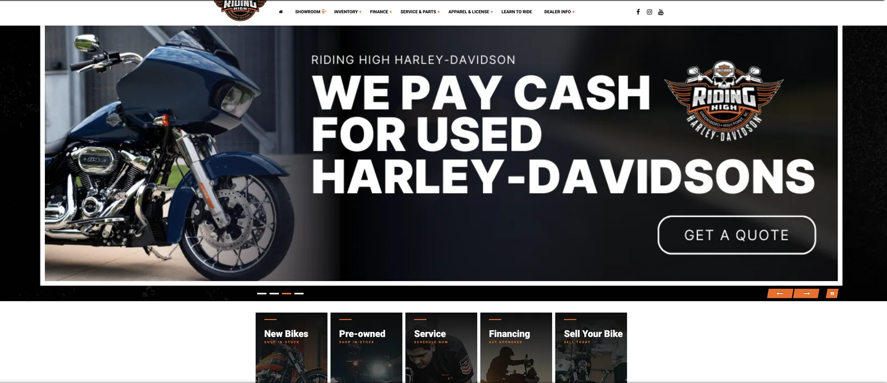

CMS & Content
- WordPress
- Cascade CMS
- HTML / CSS / JavaScript
- Technical documentation
- Content publishing & page updates
Los Angeles, CA · Web Content · CMS · Accessibility
Web Content Specialist | CMS, Accessibility & Site Audits
I publish and fix websites so people can actually use them: clear content, working navigation, and pages that pass accessibility checks.
See selected work View Project Contact me
This site is the proof: plain HTML, CSS, and JavaScript, accessible and responsive. Built by hand, no template, no framework.
01. About
I am a web content specialist with experience in content management systems, site audits, technical documentation, landing pages, and SEO. My work is practical: find what is broken or unclear on a site, fix it in the CMS, check it again, and document what changed.
At Los Alamos National Laboratory, I worked with designers, developers, and communications specialists to plan, build, and publish webpages. I formatted, edited, and published new and updated content from stakeholders and subject matter experts, organized content into sitemaps, and checked pages against UX, SEO, and accessibility standards. I also pulled usage data from analytics and reported it back to stakeholders. At Scholly, I built landing pages in WordPress, talked with stakeholders and translated what they needed to the team, and kept each project moving so it launched on time. I set up the application forms so every submission was captured and tracked, and reported the numbers back to the team. I used Airtable workflows to keep content intake and tracking organized. Earlier, at PSX Digital, I built dealer websites and tested them with Lighthouse, answered and closed tickets, and checked pages for accessibility, including a Harley-Davidson dealership site serving Greensboro, NC. QA work there contributed to a 30% reduction in bugs.
I'm doing independent web and digital projects right now: websites and WordPress updates for small businesses, plus on-page SEO to help their sites rank higher in search. I work the same way on my own projects as I did on audits: check what the numbers and the page are saying, fix what's holding it back, then check again.
Websites and WordPress updates for small businesses, including doula practices and other local services. On-page SEO to help their sites rank higher in search, plus content and page updates.
Planned, built, and published webpages with designers, developers, and communications specialists. Formatted, edited, and published content from stakeholders and subject matter experts; organized content into sitemaps; checked pages against UX, SEO, and accessibility standards; pulled usage data from analytics and reported it to stakeholders. CMS, site audits resolving 150+ content / usability / accessibility issues, technical documentation.
Built dealer websites and tested them with Lighthouse; answered and closed tickets; checked pages for accessibility, including a Harley-Davidson dealership site serving Greensboro, NC. QA / testing, contributed to 30% bug reduction.
Built landing pages in WordPress; talked with stakeholders and translated what they needed to the team, and managed projects to launch on time; application forms set up so every submission was captured and tracked, with the numbers reported back to the team; Airtable workflows; SEO raising traffic 20%, campaigns raising engagement 25%.
02. Skills
Working knowledge and hands-on experience, listed as used on the job, not as advanced-level claims.
03. Selected Work
The LANL piece is a summary of past employed work on internal pages, so there is no page to view for it. The Scholly piece is a real campaign page I built. The original campaign has ended, so it is linked here as an archived capture. The two doula websites are real client sites I built. The Harley-Davidson piece is page and QA work from my time at PSX Digital, on a dealership site serving Greensboro, NC.
Case Study 1: Summary of past employed work

Site audits surfaced 150+ issues across content, usability, and accessibility: unclear or outdated content, navigation and usability problems, and pages that did not meet accessibility checks. Visitors could not reliably find, read, or use the information they needed.
150+ content, usability, and accessibility issues resolved through the audit process.
No page to view: this is a summary of work done inside an employer's CMS. The audit method used here is documented in docs/notes.md.
Sample findings: demonstration dataset, not LANL internal data. These 16 findings were written for this demo to show how an audit log works: one row per finding, with page, category, severity, and fix. Use the filters to see how a real audit gets prioritized.
Showing 16 of 16 sample findings.
| Page | Finding | Category | Severity | Fix |
|---|---|---|---|---|
| Loading sample findings… (JavaScript is needed for the filter demo.) | ||||
This is a writing sample demonstrating the rewrite skill: a dense technical paragraph, and the plain-language version of it. It is not a quote from LANL or any employer document.
“Before submitting, users are required to complete the system authentication protocol. The submission process may then be initiated, provided that all mandatory data fields have been entered in the prescribed format.”
Long sentences, nominalizations, and no clear next step.
“Sign in first. Then fill in every required field and submit your form. If a field is missing or in the wrong format, the form will tell you which one to fix.”
Short sentences, one action per sentence, and the next step is obvious.
Case Study 2: Summary of past employed work
Real campaign page Campaign ended Mar 2022
I built the landing page for the Scholly Women of Color in Tech $10,000 Scholarship, sponsored by Google, at myscholly.com/google. Applications ran Mar 1–31, 2022. Twenty winners each received $10,000, from more than 2,000 applications.
The page headline was “Women of Color in Tech: $10,000 Scholarship.” It invited high school seniors and undergraduate women who are Black, Latina, and/or Native American, pursuing a computer science degree, to apply. The application was two rounds: a short first application that took less than 60 seconds, then 100 semi-finalists were invited to answer an essay question.
The original page is no longer live. myscholly.com/google now goes to Scholly's generic scholarship search. The archived version is on the Wayback Machine: archived capture, Mar 15, 2022. See the archived page in the View Project section below.
Landing pages needed to bring in the right visitors from search and turn that attention into engagement. Without a clear intake and tracking workflow, it was hard to know which pages and campaigns were working.
Traffic up 20% from SEO, and engagement up 25% from campaigns.
The SEO checklist used on this portfolio site is in docs/notes.md. The archived page is linked in the View Project section below.
Case Study 3: Independent project
Live site

I built the website for Noelle's Touch, a Los Angeles birth doula. The site covers support through pregnancy, labor, and postpartum.
A complete, live website a small business can use to explain its services and take inquiries. Built end to end, from structure and copy to the contact flow.
Live site. The site is hers and it may change after this portfolio was written.
Case Study 4: Independent project
Archived / former site
I built the website for Nourishing Mommies, a doula with a practice going back to 2011. The site's headline was “Powerful Moms / Powerful Support / Powerful Families.”

A complete website for a small doula business, built end to end, from structure and copy to the contact flow.
View the archived site (Feb 9, 2025) →
This site is no longer live, the client did not renew it, so the link above goes to the archived homepage on the Wayback Machine (capture Feb 9, 2025), not to the nourishingmommies.com domain.
Case Study 5: Summary of past employed work

At PSX Digital I built dealer websites and tested them with Lighthouse, answered and closed tickets, and checked pages for accessibility. That included a Harley-Davidson dealership site serving Greensboro, NC (Harley-Davidson of Greensboro, in High Point): testing pages across browsers and screen sizes, checking inventory and contact pages, logging bugs, and re-testing after fixes.
Pages shipped with fewer bugs. The QA work contributed to a 30% reduction in bugs across the sites I tested.
Visit the dealership's current site
The dealership's site has been rebuilt since 2023, so what you see today is not the version I worked on. The link is there so you can see the business, not my old pages. hdofgreensboro.com now goes to the dealership's current site.
04. View Project
A real page I built: the Scholly Women of Color in Tech $10,000 Scholarship landing page, sponsored by Google, Mar 2022. The campaign ended Mar 31, 2022 and the page is no longer live, so the link goes to the archived capture from Mar 15, 2022, where you can see the page design as it was.
Opens the archived capture on the Wayback Machine (Mar 15, 2022).
05. Contact
For web content, CMS, accessibility, and site-audit work, the fastest way to reach me is email.